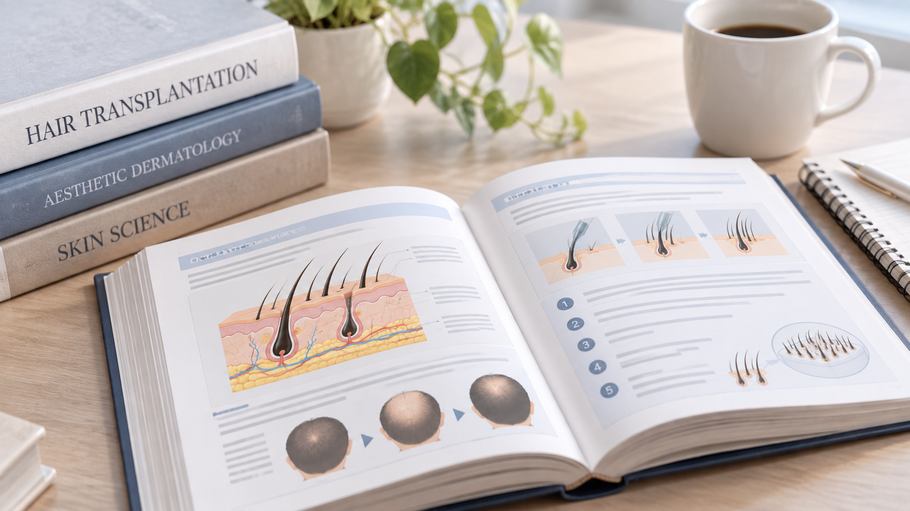

全記事一覧
自毛植毛に関する記事を「クリニックを選ぶ・比較する」「東京植毛クリニックを深掘り」「自毛植毛の基礎知識」の 3つのテーマに整理しています。具体的にクリニックを検討している方は、上から順にご覧ください。
クリニックを選ぶ・比較する
料金の実態や比較のポイントなど、クリニックを具体的に検討している方向けの記事です。
東京植毛クリニックを深掘り
料金だけでなく、医師・運営者・提携先まで踏み込んで調べた独自調査記事です。

東京植毛クリニックの医師・院長は誰？経歴や植毛実績を徹底調査
院長・氏家優斗医師について公開情報を調査。分かったことと分からなかったことを分けて整理しました。
続きを読む東京植毛クリニックの代表・山本祐司氏とは何者？植毛の窓口・トルコ植毛から現在までを調査
代表・山本祐司氏の経歴と、植毛の窓口・Esteworld・東京植毛クリニックの関係を時系列で調査しました。
続きを読む
植毛の窓口とは？トルコ植毛サポートから東京植毛クリニックまでの歴史を調査
トルコ植毛の紹介サービスとしての歴史と、東京植毛クリニックとの関係を年表とともに整理しました。
続きを読むEsteworldとはどんな植毛クリニック？トルコでの実績・東京植毛クリニックとの関係を調査
トルコの医療グループEsteworldの実績と、東京植毛クリニックとの関係を公式情報から整理しました。
続きを読む自毛植毛の基礎知識
はじめて調べる方向けの基本情報です。比較を始める前の参考にどうぞ。

自毛植毛とは｜仕組みとAGA治療との違い
自毛植毛がどのような治療なのか、基本的な仕組みとAGA治療との違いを整理しました。
続きを読む自毛植毛の費用｜料金の仕組みと考え方
料金がどのような項目で構成されているのか、比較する際の考え方を整理しました。
続きを読むFUEとFUTの違い｜代表的な2つの採取方法
代表的な採取方法であるFUEとFUTの特徴と、一般的に言われる違いを整理しました。
続きを読むグラフト・株数とは｜必要株数の考え方
「グラフト」「株」という言葉の意味と、必要株数の考え方を整理しました。
続きを読む植毛のメリット・デメリット
メリットばかりが目立ちがちですが、留意しておきたい点も誇張せずに整理しました。
続きを読む